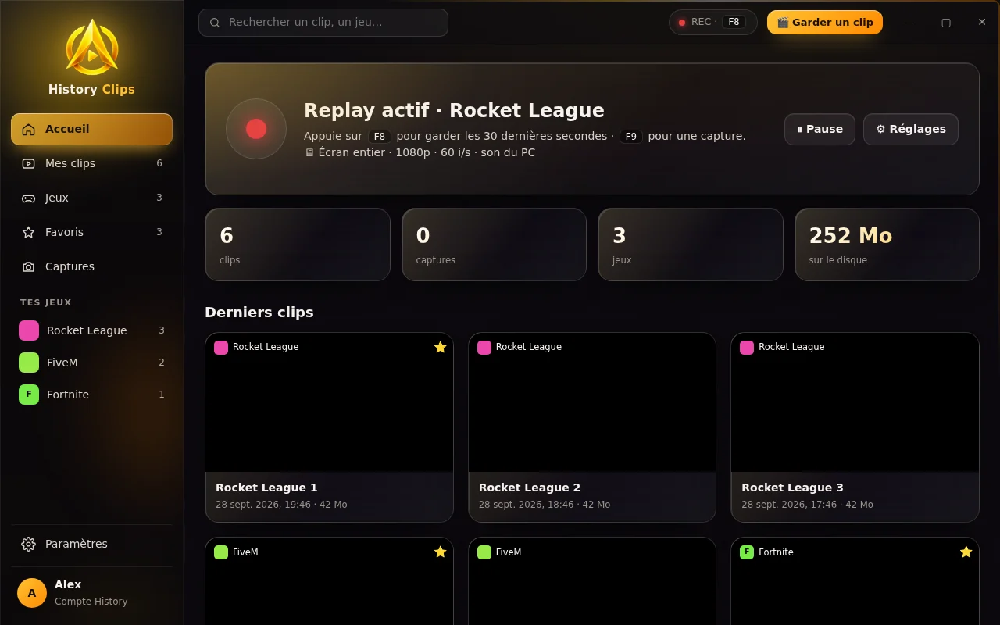
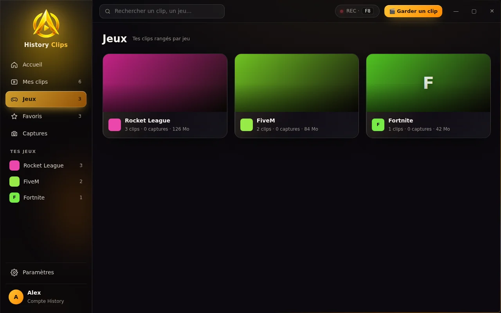
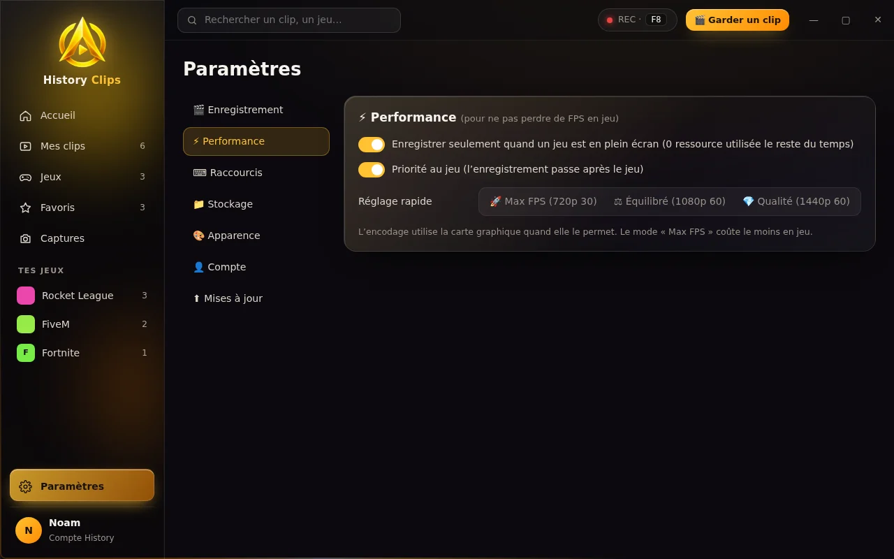

Ton meilleur moment,
gardé en un appui.
History Clips filme ta partie en fond. Tu fais une dinguerie ? Appuie sur F8 : les 30 dernières secondes sont gardées en MP4, rangées par jeu, prêtes à couper et envoyer sur Discord.
History Clips en vidéo
Tout pour tes clips, rien de trop
Une appli légère qui tourne en fond et se fait oublier jusqu’au moment où tu en as besoin.
Replay en fond
Garde les 15 s, 30 s, 1 min ou 2 min qui viennent de se passer. Rien n’est écrit sur ton disque tant que tu n’appuies pas.
Découpe précise
Choisis le début et la fin au dixième de seconde : un nouveau clip est créé, l’original reste intact.
Galerie par jeu
Chaque clip est rangé dans le dossier du jeu au premier plan. Favoris, recherche, captures à part.
Envoi Discord
Dans le salon des clips du serveur History ou en privé à un ami, en un clic, avec une qualité optimisée.
Qualité au choix
720p, 1080p ou 1440p, 30 ou 60 images par seconde, avec ou sans le son du PC.
Tes touches
F8 et F9 par défaut, mais tu mets la touche ou la combinaison que tu veux.
Le même style que History Launcher
Verre dépoli, dégradé doré, tout est à portée de clic. Clique sur une image pour l’agrandir.

Un accueil qui te dit tout
L’état du replay en direct, ta touche, tes stats et tes derniers clips.
- Voyant REC quand ça enregistre
- Bouton « Garder un clip » à tout moment
- Espace utilisé sur ton disque

Tes jeux, avec leurs images
Chaque clip est rangé dans son jeu, avec la bannière et l’icône du jeu. Ouvre un clip pour le couper, l’exporter ou l’envoyer.
- Page par jeu avec son image
- Favoris, tri et recherche
- Suppression vers la corbeille

Pensé pour tes FPS
Le replay ne tourne que quand un jeu est en plein écran, et passe après le jeu. Choisis de filmer tout l’écran ou le jeu seulement.
- Réglage rapide « Max FPS »
- 6 thèmes de couleur
- Même compte que History Launcher
Prêt en une minute
Installe
Télécharge History Clips et lance l’installateur. Il se met ensuite à jour tout seul.
Joue
Le replay tourne en fond pendant que tu joues, sans rien te demander.
Appuie sur F8
Le clip est gardé, rangé par jeu et prêt à partager.
FAQ
C’est gratuit ?
Oui, History Clips est entièrement gratuit.
Ça fait ramer mes jeux ?
L’enregistrement utilise l’encodeur vidéo de ta carte graphique quand il existe. Si tu veux l’alléger encore, passe en 720p ou en 30 images par seconde dans les réglages.
Où sont mes clips ?
Dans Vidéos › History Clips, un dossier par jeu. Tu peux changer le dossier dans les réglages.
Il faut History Launcher ?
Non, History Clips marche tout seul. Le compte History sert seulement à envoyer tes clips sur Discord.
Windows affiche un avertissement à l’installation
C’est normal pour une petite appli pas encore connue de Windows : clique sur « Informations complémentaires » puis « Exécuter quand même ».
Ne rate plus aucun moment
Installe History Clips et garde ta prochaine action en un appui.
⬇ Télécharger History Clips